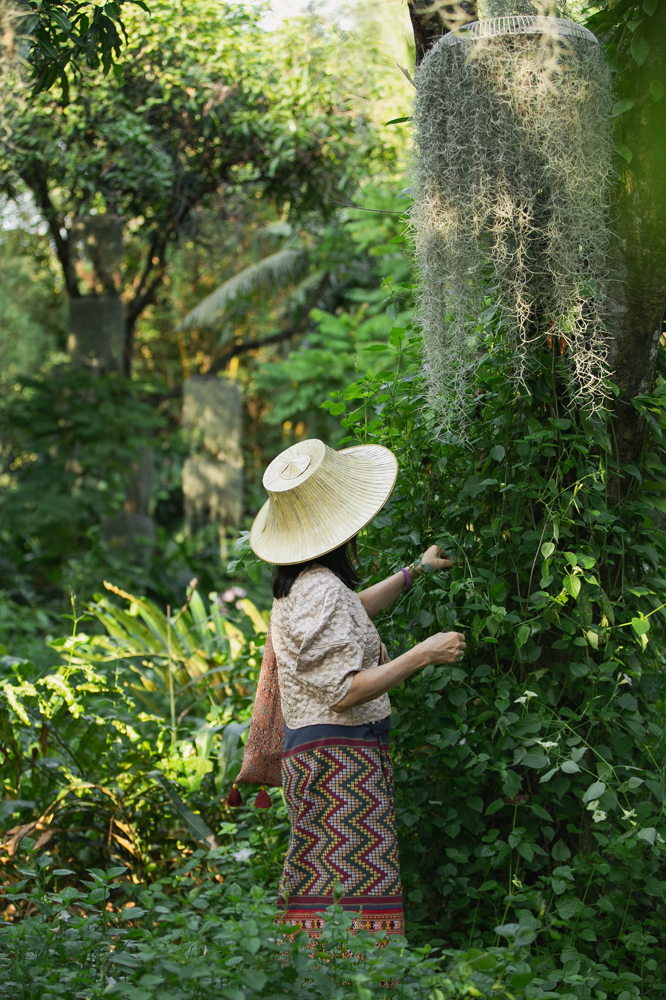
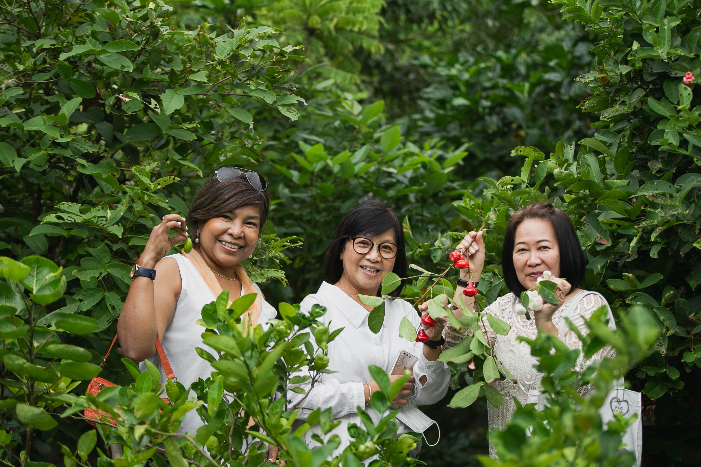
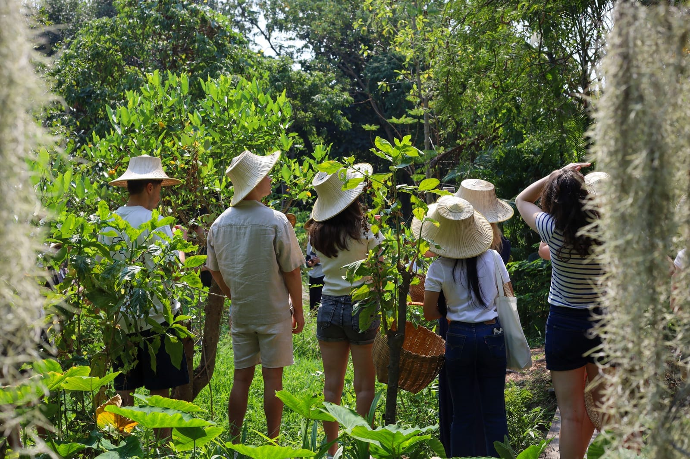

Experiences · Guided Walk
Garden tour

- Format
- Guided walk, small or large groups
- Good for
- Educational groups & permaculture-curious visitors
- Can be combined with
- Boat tour, workshops, Natura Café
A guided walk through the garden with the people who grow it — how a permaculture garden like this is laid out, what's planted where and why, and how “grow what you eat, eat what you grow” actually works day to day.
Poomjai Garden is a working Thai permaculture garden, not a show garden — built on one idea: grow what you eat, eat what you grow. This tour walks you through that logic — the layout, the planting choices, the everyday relationship between the garden and the people who tend it — rather than just naming plants.
It's a good fit for school and university groups, and for anyone who wants to understand permaculture gardening in practice rather than in theory. It also pairs easily with our other experiences — ask about combining it with a boat tour, a workshop, or a visit to Natura Café.


